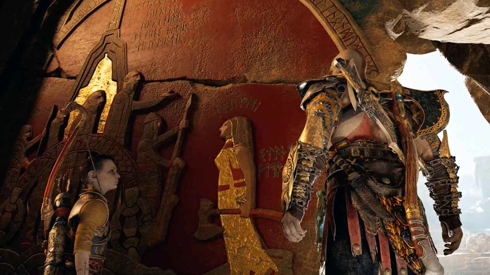

Faye
 Faye é uma personagem crucial - embora não vista -, mencionada extensivamente em God of War. Ela é a segunda esposa de Kratos e a mãe de Atreus. Embora ela vivesse como uma mortal, Faye era, na verdade, uma giganta (Jotün) de Jötunheim - e escondia de sua família sua verdadeira natureza por razões desconhecidas.
Seu nome verdadeiro era Laufey e, de acordo com Mímir, ela era conhecida como uma grande heroína gigante, conhecida como Laufey, a Justa, por suas ações em ajudar os fracos e indefesos e em se opor a Odin, o cruel deus Æsir. Ela também era conhecida por ser uma guerreira temível e respeitosa de mérito próprio, a ponto de chamar a atenção de Thor, um dos membros mais poderosos dos deuses nórdicos. Até Kratos, seu futuro marido, admirava suas habilidades de luta, dizendo que ela lutava lindamente.
Não se sabe quando ou como ela conheceu Kratos, mas depois de um período de tempo desconhecido, ela se casou com ele e ficou grávida de seu filho. Como dito por Atreus, Kratos passava seu tempo fora de casa, na maioria das vezes caçando, e o garoto passava a maior parte do tempo com sua mãe. Todos os dias, Faye ensinava seu filho sobre as diferentes línguas em torno dos nove reinos, pelo menos as que ela conhecia, e também sobre o arco e flecha. Ela também foi quem fez o arco de Atreus. Ela iria ensinava-o sobre os deuses e as diferentes criaturas das florestas nórdicas.
Antes de morrer, ela instruiu Kratos e Atreus a cremarem seu corpo e espalhar suas cinzas no topo do pico mais alto dos nove reinos. Sem o conhecimento deles, ela se referia a Jötunheim, onde havia um mural contando sua vida, bem como uma profecia sobre Atreus/Loki, que iria explicar as origens dela a eles. Para garantir que os eventos acontecessem como ela queria, ela também instruiu Kratos a cortar uma árvore específica que desabilitaria a proteção em torno de seus bosques e alertaria os deuses sobre sua presença em Midgard. Odin mandou Baldur localizá-la (sem saber que ela estava morta e cremada), levando seu marido e filho a Jötunheim para aprenderem a verdade e se unirem como pai e filho.